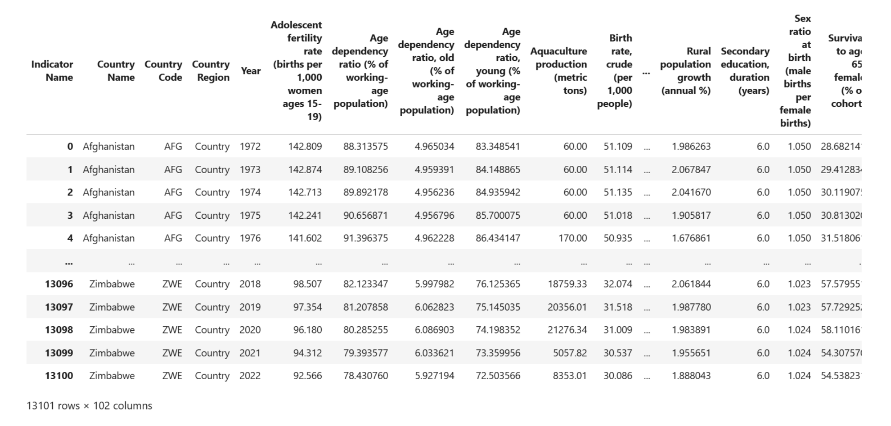
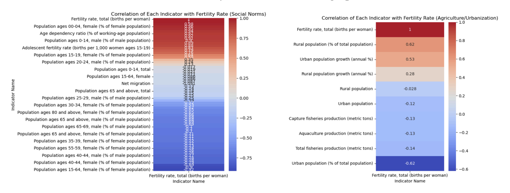
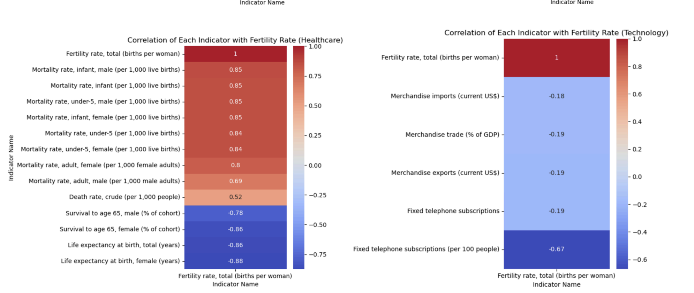
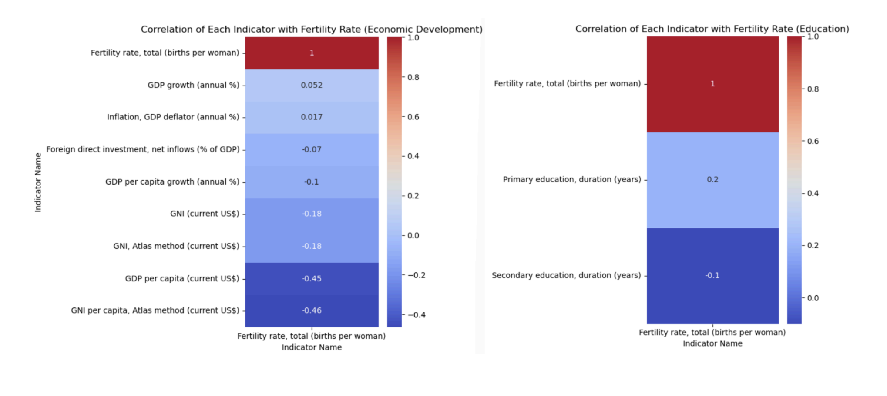
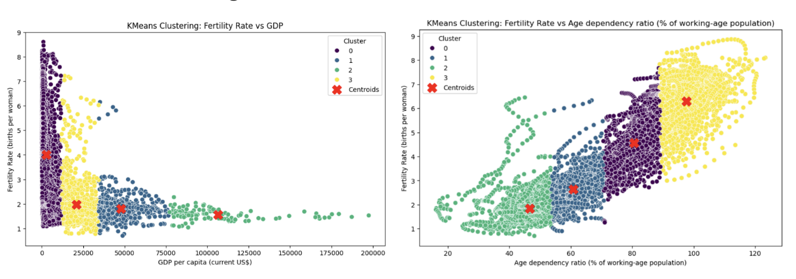

This project analyzes long-term global fertility trends by examining the Total Fertility Rate (TFR), which reflects the average number of children a woman is expected to have. Declining fertility in developed countries and persistently high rates in low-income regions raise critical questions about future population stability, labor force dynamics, and economic growth. Inspired by recent research and global case studies, this study explores the socio-economic drivers behind fertility shifts and their implications for policy and development.
The dataset used in this project was sourced from the World Bank and focuses on the Total Fertility Rate (TFR) by country over time. The TFR represents the average number of births per woman and serves as a key demographic indicator for population analysis. This data spans multiple decades and includes global coverage, enabling regional comparisons and long-term trend evaluation. The dataset is publicly available from the World Bank Open Data portal.
🔗 Source: World Bank Data
The image below summarizes key features and sample fields included in the dataset:
The following visualizations provide a comparative view of fertility and population density across regions:


To explore relationships between fertility and influencing factors, correlation matrices are used. Strong correlations are indicated by dark red or blue colors, while weak correlations are shown in lighter tones. These visualizations guide our selection of variables for deeper analysis.
  To investigate the socio-economic factors influencing global fertility trends, we applied a two-pronged analytical approach: linear regression and K-Means clustering.
Linear regression was used to analyze how indicators across six thematic categories—Social Norms, Agriculture/Urbanization, Healthcare, Technological Development, Economy, and Education—affect fertility rates. The continuous nature of the Total Fertility Rate (TFR) makes it suitable for regression modeling. Each category was represented by a separate DataFrame, and models were evaluated using R-squared and Mean Squared Error (MSE).
Feature selection was implemented using Sequential Forward Selection to avoid overfitting and enhance generalization. Feature scaling was applied with StandardScaler to normalize variables. Notable findings include:
K-Means clustering was employed to uncover non-linear groupings of countries based on fertility, GDP per capita, and age dependency ratios. Clusters revealed patterns linking low GDP and high fertility, with high dependency ratios, while higher-income nations clustered with lower fertility rates. This method supported insights from regression and highlighted demographic and economic segmentation across regions.
The clustering visualization below displays countries grouped based on GDP per capita and age dependency ratio. Each cluster represents countries with similar economic and demographic traits. The results show that higher GDP per capita is associated with lower fertility rates, while countries with higher dependency ratios generally experience higher fertility. This reinforces the insights obtained from the regression model and emphasizes distinct global fertility dynamics.
Our analysis revealed several critical patterns and regional distinctions in global fertility trends:
You can preview the main script below, or download the full Python file.
# fertility_script.py
# Import libraries
import pandas as pd
import numpy as np
from sklearn.linear_model import LinearRegression
from sklearn.preprocessing import StandardScaler
from sklearn.metrics import mean_squared_error, r2_score
from sklearn.cluster import KMeans
from sklearn.feature_selection import SequentialFeatureSelector
from sklearn.model_selection import train_test_split
import matplotlib.pyplot as plt
import seaborn as sns
# Example logic from the script...
# Load and prepare fertility data
df = pd.read_csv('fertility_data.csv')
# (Further processing and model building...)
← Back to Home